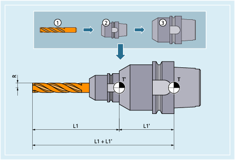
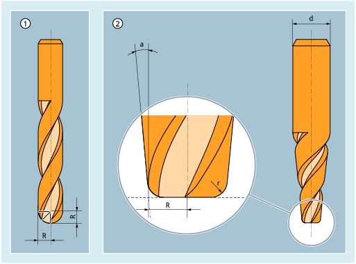
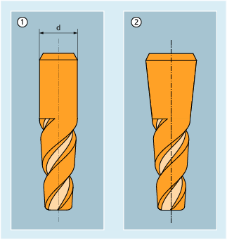

Innerhalb der Werkzeuggruppe "Fräswerkzeuge" gibt es folgende Werkzeugtypen:
100 | Fräswerkzeug nach CLDATA (Cutter Location Data) |
110 | Kugelkopffräser |
111 | Zylindrischer Gesenkfräser |
114 | Tonnenfräser (Tonnenform) |
115 | Tropfenfräser (Tropfenform) |
116 | Tonnenfräser kegelig (Kegelform) |
120 | Schaftfräser ohne Eckenverrundung |
121 | Schaftfräser mit Eckenverrundung |
130 | Winkelkopffräser ohne Eckenverrundung |
131 | Winkelkopffräser mit Eckenverrundung |
140 | Planfräser |
145 | Gewindefräser |
150 | Scheibenfräser |
151 | Säge |
155 | Kegelstumpffräser ohne Eckenverrundung |
156 | Kegelstumpffräser mit Eckenverrundung |
157 | Kegeliger Gesenkfräser |
160 | Bohrgewindefräser |
Die folgenden Abbildungen geben einen Überblick, welche Werkzeugparameter bei Fräswerkzeugen in den Korrekturspeicher eingetragen werden:
① | Werkzeug |
② | Werkzeugaufnahme |
③ | Werkzeugadapter |
T | Adapterbezugspunkt (bei eingestecktem Werkzeug = Werkzeugträgerbezugspunkt) |
T' | Werkzeughalterbezugspunkt |
L1 | Geometrie - Länge 1 |
L1' | Adaptermaß - Länge 1 |
L1 + L1' | Gesamtlänge L1 |
R | Radius |
Werkzeugparameter | Bedeutung |
|---|---|
$TC_DP1 | Werkzeugtyp 1xy |
$TC_DP3 | Geometrie - Länge 1 |
$TC_DP6 | Geometrie - Radius |
$TC_DP21 | Adaptermaß - Länge 1 |
| |
T | Werkzeugträgerbezugspunkt |
T' | Werkzeughalterbezugspunkt |
L1 | Geometrie - Länge 1 |
R | Werkzeugradius |
L1' | Basismaß - Länge 1 |
L2' | Basismaß - Länge 2 |
L3' | Basismaß - Länge 3 |
Werkzeugparameter | Bedeutung |
|---|---|
$TC_DP1 | Werkzeugtyp |
$TC_DP3 | Geometrie - Länge 1 |
$TC_DP6 | Geometrie - Radius |
$TC_DP21 | Basismaß - Länge 1 |
$TC_DP22 | Basismaß - Länge 2 |
$TC_DP23 | Basismaß - Länge 3 |
| |
Mit den WZ-Parametern 6 bis 11 wird die Form des Werkzeugs festgelegt. Die Angaben werden für die Geometrie-Werkzeugradiuskorrektur benötigt.
In den meisten Fällen wird nur der WZ-Parameter $TC_DP6 (WZ-Radius 1) benutzt.
Zur Definition von Konturwerkzeugen mit mehreren Werkzeugschneiden können der minimale und maximale Grenzwinkel angegeben werden. Die beiden Grenzwinkel beziehen sich jeweils auf den Vektor vom Schneidenmittelpunkt zum Schneidenbezugspunkt und werden im Gegenuhrzeigersinn gezählt.
WZ-Winkel 1 | Minimaler Grenzwinkel je Werkzeugschneide |
WZ-Winkel 2 | Maximaler Grenzwinkel je Werkzeugschneide |
Die für die Werkzeugbeschreibung beim 3D-Stirnfräsen relevanten WZ-Parameter sind abhängig vom verwendeten Werkzeugtyp. So sind z. B. für einen Kugelkopffräser nur der WZ-Parameter 6, für einen Kegelstumpffräser mit Eckenverrundung zusätzlich die WZ-Parameter 7, 9 und 11 relevant.
① | Kugelkopffräser |
② | Kegelstumpffräser mit Eckenverrundung |
R | WZ-Parameter 6: Werkzeugradius |
r | WZ-Parameter 7: Eckenradius |
d | WZ-Parameter 9: Oberer Kegelstumpfdurchmesser |
a | WZ-Parameter 11: Winkel zwischen Mantellinie und Werkzeuglängsachse |
Die Angabe von WZ-Parameter 9 (oberer Kegelstumpfdurchmesser) ist optional. Wird dieser WZ-Parameter nicht angegeben, wird von einer sich über die ganze Werkzeuglänge erstreckenden Kegelform ausgegangen:
① | Mit Angabe von WZ-Parameter 9 |
② | Ohne Angabe von WZ-Parametzer 9 |
Siehe auch:
Übersicht